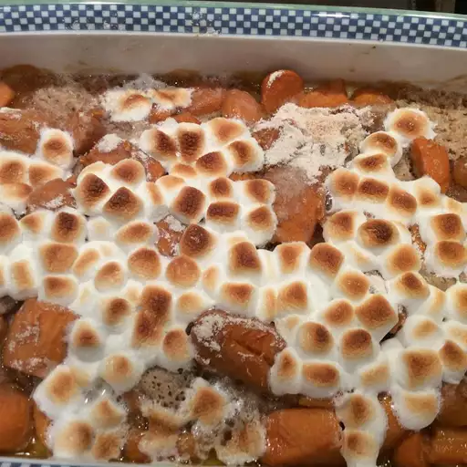

Sweet Potatoes

Description
These Thanksgiving sweet potatoes are made even sweeter with orange juice, cinnamon, and marshmallows.
Ingredients
- 2(15 ounce) cans sweet potatoes
- 1/4 cup orange juice
- 3/4 cup all-purpose flour
- 1/2 cup white sugar
- 1 teaspoon ground cinnamon
- 1 pinch salt
- 1/2 cup margarine
- 1 1/2 cups miniature marshmellows
Directions
- Preheat the oven to 350 degrees F (175 degrees C)
- Place sweet potatoes in a 6x10-inch shallow baking dish. Drizzle with orange juice and set aside
- Mix together flour, sugar, cinnamon, and salt in a medium bowl until combined. Cut in margarine with 2 knives or a pastry blender until mixture resembles coarse crumbs; sprinkle evenly over sweet potatoes
- Bake in the preheated oven for 30 minutes
- Remove casserole from the oven and turn on the broiler. Sprinkle marshmallows evenly over the top of casserole. Cook under the broiler until marshmallows are puffed and golden brown
- Enjoy!